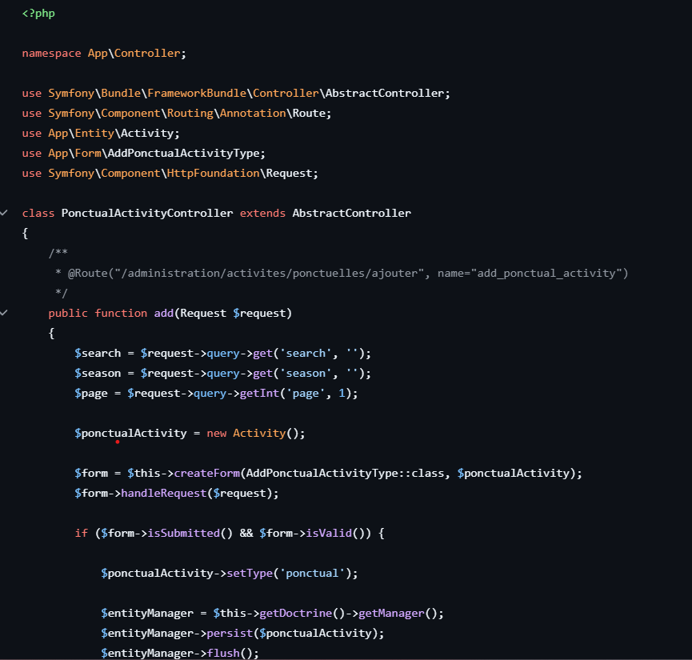
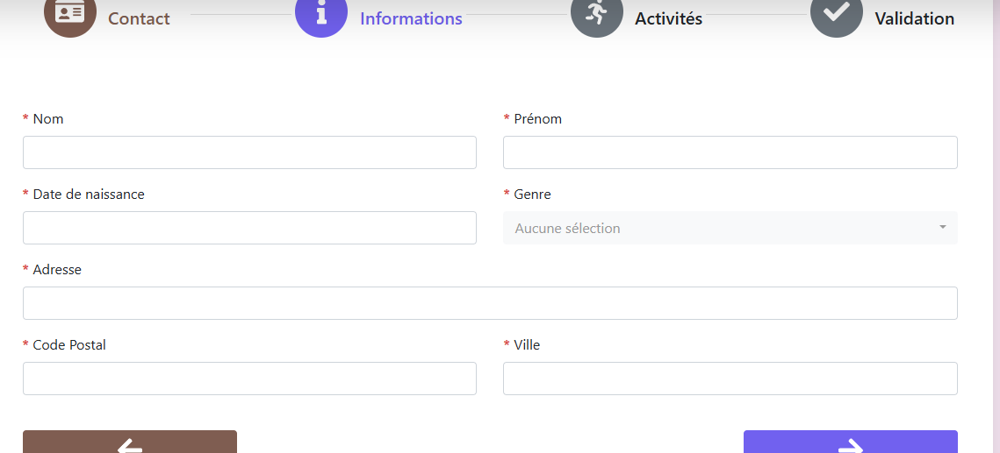

Lors de mon stage de première année, j'ai contribué à l'évolution du site web de l'association Rékilibre. Ce site permettait de gérer les différents événements de l'association (activités, réunions, etc.) et offrait aux membres la possibilité de s'inscrire ou de se réinscrire en ligne, y compris le paiement de leur cotisation.
Mes différentes missions :
Correction de bugs : Le site rencontrait divers problèmes critiques, notamment l’impossibilité pour les anciens membres de se réinscrire. Mon rôle a été d’identifier et corriger ces dysfonctionnements.
Refonte du formulaire d’inscription et intégration d'une API bancaire : Initialement, l’inscription nécessitait l’envoi physique d’un chèque. J’ai modernisé ce processus en intégrant une solution de paiement directement sur le formulaire, en collaboration avec l’équipe et à l’aide d’une API bancaire fournie par leur établissement bancaire associatif.
Migration de version du site : En fin de stage, j’ai amorcé la migration du site vers une version plus récente du framework Symfony. Cette tâche a impliqué des recherches approfondies et des tests de compatibilité. Bien que cette migration n’ait pas été finalisée dans le temps imparti, elle a constitué une étape importante du projet.
Compétences acquises :
Recenser et identifier les ressources numériques : Comprendre et reconnaîtres les différents outils mise à notre disposition sur un projet concret comme des logiciels, du matériels et autre. Durant le stage, j’ai été amené à analyser et décrire les ressources utilisées (outils logiciels, matériel, etc.) dans le rapport de stage et donc apprendre à maitriser mon environnement de développement. Durant ce stage, j'ai travaillé sur plusieurs machine virtuel en utilisant VS-Sphere, plusieurs système d'exploitation ainsi que le framework Symfony.
Le lien du rapport de stage se trouve au pied de cette page.
Exploiter des référentiels, normes et standards adoptés par le prestataire informatique : En développement, il est important de garder des bonnes pratiques et respecter certaine norme pour avoir une organisation simple et clair, apporter plus de portabilité à un projet et permettre facilement le travail en équipe. Par exemple, ce projet-ci devait avoir des règles de nomages, une documentation de code, etc. On peut observer ci-dessous que les variables utilisées ne sont pas nommées au hazard mais tente d'être explicite. On peut aussi observer que le code est bien indenté et qu'il n'y a aucune répétition de code.

Participer à la valorisation de l’image de l’organisation sur les médias numériques en tenant compte du cadre juridique et des enjeux économiques : Respecter l'identité numérique d'une entreprise ainsi que son budget pour améliorer son expesion dans le milieu digital et avoir plus grande visibilité tout en vérifiant que les lois soient respectées. Ici j'améliore le site internet pour que l'organisation. Vis à vis des utilisateurs, nous demandant uniquement les données obligatoires au bont fonctionnement du site internet pour respecter le RGPD.

Mettre en place son environnement d’apprentissage personnel : S'autoformer et installer tout ce qui est nécessaire au bon déroulé de notre mission sur le terrain ou non. Ici, une partie du stage a nécessité une autoformation sur le framework Symfony, non abordé en cours de première année. Pour cela, j'ai regardé une formamtion vidéo sur internet et au bout d'une semaine, j'étais initié à cette nouvelle technologie. J'ai également du installer divers machine virtuel pour travailler sur des versions de Symfony plus ancienne, aujourd'hui obsolète et introuvable sur le marcher.